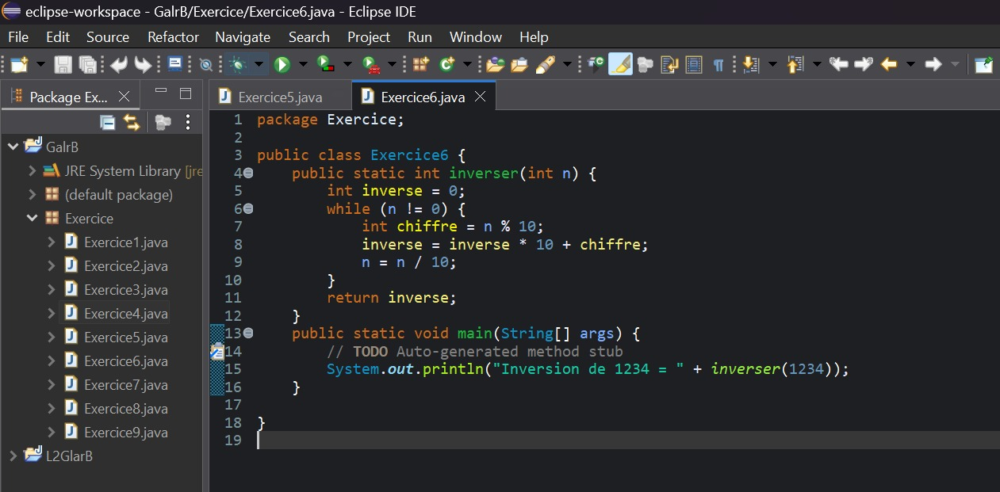
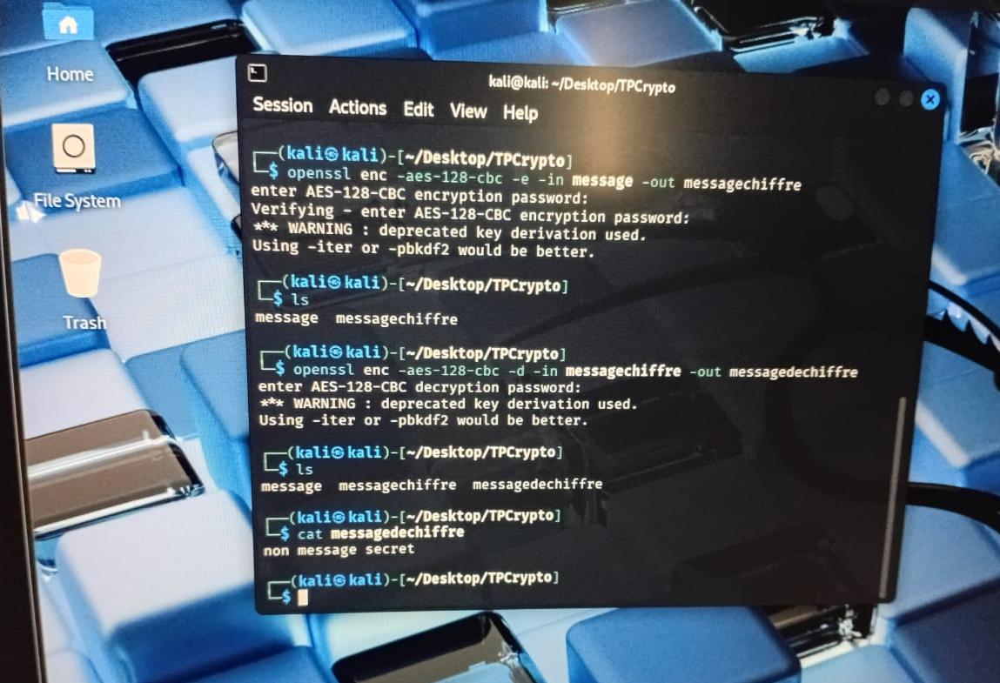
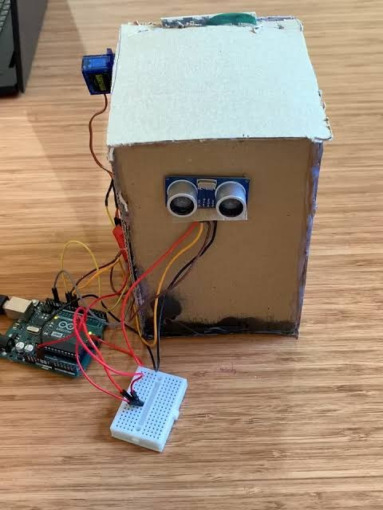

Ce projet, développé en Java sous Eclipse, applique la programmation orientée objet pour structurer le code et manipuler efficacement les données grâce à des méthodes simples et organisées.
Technologies : JAVA, Eclipse, Programmation orientée objet

Ce projet utilise AES avec OpenSSL pour chiffrer et déchiffrer des données à l’aide d’un mot de passe, afin d’assurer leur confidentialité. Cette approche illustre les bases de la sécurité informatique, notamment la confidentialité et la protection des informations.
Technologies :Kali Linux, AES, terminal Linux...

Ce prototype est un système automatisé basé sur une carte Arduino, équipé d’un capteur à ultrasons et d’un servomoteur. Il détecte la présence d’un objet à l’avant et déclenche automatiquement l’ouverture ou la fermeture du couvercle, illustrant une solution simple d’objet intelligent sans contact, à la fois pratique et hygiénique.
Technologies :Arduino, capteur-ultrason, servomoteur, automatisation.
Voir le code sur GitHub